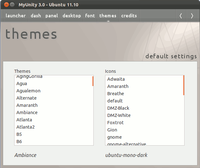

MyUnity
Archivierte Anleitung
Dieser Artikel wurde archiviert, da er - oder Teile daraus - nur noch unter einer älteren Ubuntu-Version nutzbar ist. Diese Anleitung wird vom Wiki-Team weder auf Richtigkeit überprüft noch anderweitig gepflegt. Zusätzlich wurde der Artikel für weitere Änderungen gesperrt.
Zum Verständnis dieses Artikels sind folgende Seiten hilfreich:
MyUnity  ist ein "inoffizielles" Konfigurationswerkzeug, das eine grafische Oberfläche für Einstellungen des Unity-Desktops anbietet, auf die man sonst nicht leicht zugreifen kann. "Inoffiziell" bedeutet, dass das Programm nicht offiziell vom Unity-Team erstellt wird (um diese Abgrenzung wurde zu Beginn der Programmentwicklung gebeten). Da viele Funktionen von Unity erst im 3D-Modus, also mit Grafikbeschleunigung, funktionieren, haben einige Funktionen im 2D-Modus keine Auswirkungen.
ist ein "inoffizielles" Konfigurationswerkzeug, das eine grafische Oberfläche für Einstellungen des Unity-Desktops anbietet, auf die man sonst nicht leicht zugreifen kann. "Inoffiziell" bedeutet, dass das Programm nicht offiziell vom Unity-Team erstellt wird (um diese Abgrenzung wurde zu Beginn der Programmentwicklung gebeten). Da viele Funktionen von Unity erst im 3D-Modus, also mit Grafikbeschleunigung, funktionieren, haben einige Funktionen im 2D-Modus keine Auswirkungen.
Das Programm ist mit dem GNOME Tweak Tool für die GNOME Shell vergleichbar. Es wurde von einem freien Entwickler-Team in der Programmiersprache Gambas geschrieben und unterliegt der GNU GPL V3.
Wer ein ähnliches Werkzeug sucht, dass auch für neuere Ubuntu-Versionen geeignet ist, sollte sich Unsettings oder Ubuntu Tweak anschauen.
Installation¶
Eine Installation ist nur unter Ubuntu 12.04 möglich. Das Programm ist mit folgendem Paket installierbar [1]:
myunity (universe)
 mit apturl
mit apturl
Paketliste zum Kopieren:
sudo apt-get install myunity
sudo aptitude install myunity
Bedienung¶

Einstellungen vornehmen¶
Das Programm gliedert sich in sechs Abschnitte, die über die Leiste am oberen Fensterrand aufgerufen werden können:
Launcher
Dash
Panel
Desktop
Font
Themes
Innerhalb dieser Bereiche kann man dann verschiedene Einstellungen verändern, deren Auswirkungen sich sofort beobachten lassen.
Einstellungen wiederherstellen¶
Man kann die ursprünglichen Einstellungen wiederherstellen, indem man im entsprechenden Abschnitt auf "default settings" klickt und den erscheinenden Dialog mit "Continue" bestätigt.
Achtung!
Alle veränderten Einstellungen werden so unwiederbringlich gelöscht!
Rätselhafte Begriffe¶
Manche der zahlreichen Einstellungen haben Beschriftungen, die nicht auf den ersten Blick verraten, was dahinter steckt. Einige davon sind in folgender Tabelle erklärt:
| Abschnitt | Eigenschaft | Bedeutung |
| Launcher | Backlights | Hintergrundfarbe der Programm-Icons |
| Dash | Blur | Gibt an, ob unter dem Dash liegende Programm-Fenster verschwommen dargestellt werden sollen |
| Desktop | H/V Desktop | Gibt an, wie viele horizontale und vertikale virtuelle Desktops es gibt. |
Problembehebung¶
Zurzeit ist die Programmoberfläche ausschließlich auf Englisch. Viele der Begriffe decken sich mit denen, die hier im Wiki und im aktuellen Umgang mit Unity verwendet werden. Dem MyUnity-Team liegt seit kurzem eine Übersetzung in deutscher Sprache via Launchpad-Translations vor. Der Übergang auf die deutschen Begriffe sollte in Kürze erfolgen.
Links¶
Unity
 Übersichtsartikel
ÜbersichtsartikelUnity-Arbeitsbereich Einstellungen im Unity-Plugin verändern
MyUnity 3.0 released with redesigned interface and new features
- Blogbeitrag, 02/2012
- Erstellt mit Inyoka
-
 2004 – 2017 ubuntuusers.de • Einige Rechte vorbehalten
2004 – 2017 ubuntuusers.de • Einige Rechte vorbehalten
Lizenz • Kontakt • Datenschutz • Impressum • Serverstatus -
Serverhousing gespendet von